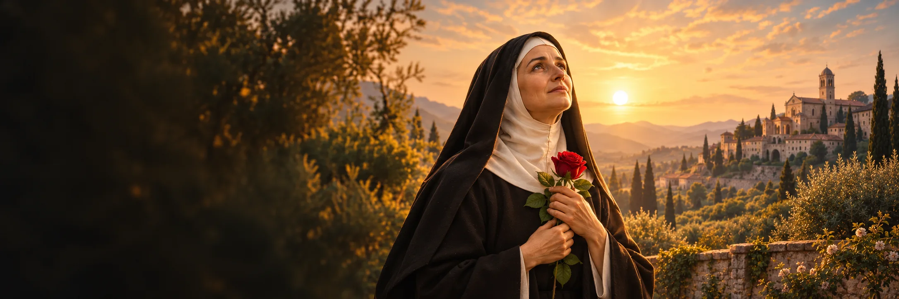

Przerwać odwet
Gdy emocje są silne, odłóż reakcję i wybierz słowa, które nie pogłębią konfliktu.

XIV–XV wiek (daty życia sporne)
Wspomnienie liturgiczne: 22 maja
Żona, matka, wdowa i augustianka. Jej historia łączy żałobę, przebaczenie i modlitwę w trudnych sprawach.
Rita z Cascii jest czczona jako żona, matka, wdowa i augustianka. Jej tradycyjny życiorys opowiada o zabójstwie męża, śmierci synów i odmowie rodzinnego odwetu. Szczegóły tych wydarzeń znamy z późniejszego przekazu, ponieważ Rita nie pozostawiła własnych pism; nawet lata jej życia są sporne. Po utracie bliskich wstąpiła do klasztoru augustianek w Cascii. Jej kult rozwijał się przez stulecia, a w 1900 roku została kanonizowana. Wierni przyzywają ją szczególnie w trudnych sprawach. Pamięć o niej łączy doświadczenie straty z pragnieniem pokoju i nadzieją, która nie jest obietnicą łatwego rozwiązania.
Poznaj historię jej życia →„Błogosławieni, którzy wprowadzają pokój.”Jezus w Ewangelii według św. Mateusza 5,9 — słowa dobrane do historii RityKrótki przekład własny Mt 5,9. Rita nie zostawiła pism; to nie jest jej wypowiedź.
Rodzinna miejscowość Rity leży niedaleko Cascii; źródła różnią się co do roku jej narodzin.
Według tradycyjnego życiorysu poślubia Pawła Mancini i zostaje matką dwóch synów.
Według przekazu sanktuarium mąż zostaje zabity, synowie umierają, a Rita odmawia wejścia w spiralę zemsty.
Wstępuje do augustianek w klasztorze św. Marii Magdaleny w Cascii.
Umiera 22 maja; tradycje chronologiczne wskazują 1447 albo 1457 rok.
Papież Leon XIII ogłasza Ritę świętą 24 maja.
 Artystyczny wizerunek świętej Rity z Cascii.
Artystyczny wizerunek świętej Rity z Cascii.Około 3 min czytania · 4 rozdziały
Rita pochodziła z Roccaporeny niedaleko Cascii. Sanktuarium podaje jej imię jako Margherita Lotti i przedstawia dwie możliwe chronologie: 1371–1447 albo 1381–1457. Rita nie pozostawiła własnych pism. Jej życie znamy z późniejszych życiorysów, pamięci wspólnoty i świadectw rozwijającego się kultu. Dlatego wiele wydarzeń rodzinnych można opowiedzieć tylko jako część tradycji.
Jan Paweł II mówił o niej jako o żonie, matce, wdowie i zakonnicy. Te etapy pozostały razem w pamięci o Ricie: życie klasztorne nie wymazało jej wcześniejszej historii rodzinnej. Papież podkreślał także jej dążenie do pokoju. Ten motyw powraca w przekazie o tym, jak zareagowała na śmierć męża.
Według przekazu sanktuarium Rita poślubiła Pawła Manciniego i miała dwóch synów. Jej mąż został zabity, a synowie zmarli niedługo po nim. Tradycja wiąże ten czas z decyzją Rity, by nie podsycać zemsty między rodzinami. Opowiada także o modlitwie za synów, aby nie weszli w krąg odwetu po śmierci ojca. Szczegóły tych wydarzeń pochodzą z późniejszego życiorysu, więc nie pozwalają odtworzyć rozmów w rodzinie ani przebiegu żałoby.
Według sanktuarium Rita nie wyjawiła nazwisk zabójców, co miało wywołać sprzeciw krewnych męża. Przebaczenie w tej historii nie cofnęło straty; oznaczało odmowę przekazania przemocy dalej. Sanktuarium odrzuca zarazem obraz Pawła jako człowieka gwałtownego, spotykany w niektórych żywotach. Dramat tej rodziny nie potrzebuje takiego dopowiedzenia, aby zrozumieć wagę pojednania.
Po utracie rodziny Rita weszła do wspólnoty augustianek przy klasztorze św. Marii Magdaleny w Cascii. Tradycyjny życiorys opisuje trudności, które miała pokonać przed przyjęciem. W klasztorze jej dni wyznaczały modlitwa, praca i życie we wspólnocie. Pamięć o Ricie łączy ten etap z wcześniejszym doświadczeniem żony, matki i wdowy.
Z jej kultem wiążą się opowiadania o cierniu oraz o róży przyniesionej zimą z Roccaporeny. Są częścią tradycji pobożności, a róża stała się znakiem nadziei pośród trudności. Życie zakonne Rity, którego pamięć przetrwała w Cascii, trwało przez wiele lat. Późniejsze symbole nie powinny przesłaniać zwyczajnego rytmu jej życia w klasztorze.
Jej wspomnienie przypada 22 maja; rok śmierci pozostaje sporny. Leon XIII kanonizował ją 24 maja 1900 roku. W ciągu stuleci wierni zaczęli przyzywać ją szczególnie w sprawach trudnych i uznawanych za beznadziejne. To język ludowej pobożności, nie gwarancja określonego wyniku modlitwy.
Rita nie pozostawiła zbioru własnych sentencji. O jej życiu mówią przede wszystkim tradycyjny życiorys, pamięć Cascii i późniejsze świadectwa kultu. Rodzina, żałoba, odmowa odwetu i wspólnota zakonna tworzą historię, do której wracają ludzie mierzący się z trudnymi sprawami.
Gdy emocje są silne, odłóż reakcję i wybierz słowa, które nie pogłębią konfliktu.

W trudnej sprawie połącz modlitwę z rozmową z zaufaną osobą lub specjalistą.

Po stracie szukaj małego kroku, który dziś jest możliwy.
Boże, za wstawiennictwem świętej Rity powierzam Ci to, czego nie potrafię rozwiązać. Daj mi odwagę szukania pomocy, cierpliwość i gotowość do dobra. Amen.
Modlitwa autorska W Modlitwie; nie jest cytatem ze świętego ani tekstem liturgicznym.Powierz swoją intencję →